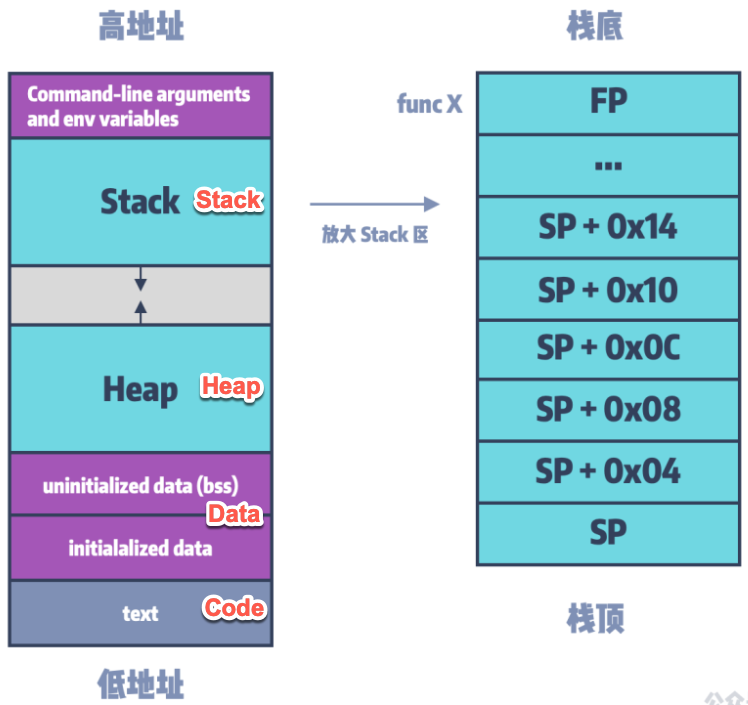

典型的内存布局
搞懂了什么是内存布局，再来聊聊，典型的常见的内存布局。
常见的内存布局，内容很多。
用如下图（别人画的，我加了点内容），大概先解释一下，好让大家有个概念：
- （程序的）典型的内存布局
- 
内存布局举例
下面，通过具体例子，来解释，内存布局的细节含义：
官网示例代码中的内存布局
已我们前面运行测试代码中用到的官网示例代码unicorn/sample_arm.py来说，其中就是：
- 要模拟执行的代码code
- 具体是什么：
ARM_CODE = b"\x37\x00\xa0\xe3\x03\x10\x42\xe0" # mov r0, #0x37; sub r1, r2, r3 - 具体放到内存什么地方=范围：
ADDRESS = 0x10000
- 具体是什么：
意思是：
把代码\x37\x00\xa0\xe3\x03\x10\x42\xe0放到内存地址为0x10000开始的地方
就没了。是的。即没有我们提到的，函数参数，也没有Stack、Heap，特定地址写入特定值等内容
因为，此处要模拟的，只是一个代码片段，不是一个完整的函数。
此处只是官网示例的代码，用于演示运行，确保Unicorn模拟环境正常而已。所以没有用完整的函数，只是一小段代码而已。
此时的内存布局，可以理解为：
Mapped memory: Code [0x0000000000010000 - 4GB]
或：
Mapped memory: Code [0x0000000000010000 - 0x0000000000010008]
其中：0x0000000000010008 - 0x0000000000010000 = 8 = 上述代码的大小=字节个数
实际例子中的内存布局
之前自己某个Unicorn模拟函数的代码，中的内存布局：
早期是：
Mapped memory: Code [0x0000000000010000-0x0000000000410000]
Mapped memory: Libc [0x0000000000500000-0x0000000000580000]
Mapped memory: Heap [0x0000000000600000-0x0000000000700000]
Mapped memory: Stack [0x0000000000700000-0x0000000000800000]
Mapped memory: Args [0x0000000000800000-0x0000000000810000]
经过多次优化，最后是：
Mapped memory: Code [0x00010000-0x00410000]
[0x00010000-0x000124C8] func: ___lldb_unnamed_symbol2575$$akd
[0x00031220-0x00033450] fix br err: x9SmallOffset
[0x00068020-0x00069B80] fix br err: x10AbsFuncAddrWithOffset
[0x00069B88-0x00069B90] emulateFree jump
[0x00069BC0-0x00069BC8] emulateAkdFunc2567 jump
[0x00069BD8-0x00069BE0] emulateMalloc jump
[0x00069BE8-0x00069BF0] line 7392 jump
[0x00069C08-0x00069C10] emulateDemalloc jump
[0x00200000-0x00200004] func: emulateMalloc
[0x00220000-0x00220004] func: emulateFree
[0x00280000-0x00280004] func: emulateAkdFunc2567
Mapped memory: Libc [0x00500000-0x00580000]
Mapped memory: Heap [0x00600000-0x00700000]
Mapped memory: Stack [0x00700000-0x00800000]
Mapped memory: Args [0x00800000-0x00810000]
具体布局的详细解释，详见后续章节：
其他一些内存布局
afl-unicorn: Fuzzing Arbitrary Binary Code | by Nathan Voss | HackerNoon.com | Medium
中的Unicorn的内存布局：
# Memory map for the code to be tested
CODE_ADDRESS = 0x00100000 # Arbitrary address where code to test will be loaded
CODE_SIZE_MAX = 0x00010000 # Max size for the code (64kb)
STACK_ADDRESS = 0x00200000 # Address of the stack (arbitrarily chosen)
STACK_SIZE = 0x00010000 # Size of the stack (arbitrarily chosen)
DATA_ADDRESS = 0x00300000 # Address where mutated data will be placed
DATA_SIZE_MAX = 0x00010000 # Maximum allowable size of mutated data
另外，其中还有一些更加细节的内容，比如
- 初始化寄存器
__load_registers - 映射内存 的 同时设置读写属性 -》用于内存保护
可供参考。
以及：
afl-unicorn/unicorn_loader.py at master · Battelle/afl-unicorn · GitHub
中的：
__map_segments__map_segment